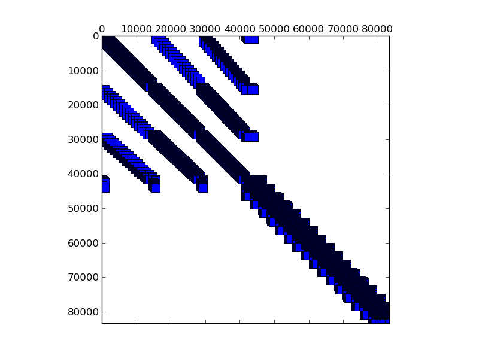

Matrix: consph

Program arguments: ../build/test_spmv_sim ../fpga16-benchmark/fpga16/consph.mtx File: ../fpga16-benchmark/fpga16/consph.mtx Sorting took: took 0.529447 seconds. Param MatrixPath ../fpga16-benchmark/fpga16/consph.mtx Running on DFE Result Simple Total cycles=875967,877647, Result Simple Padding cycles=45,45, Result Simple Reduction cycles=416670,416670, Config ArchitectureId 10 Result Simple Input width =8, Result Simple Pipes =2, Result Simple Iterations=1, Result Simple Took (ms)=36.8045, Result Simple Est (ms)=0.00875967, Result Simple Gflops (est)=1.37231, Result Simple Gflops (actual)=0.000326617, Result Simple BWidth (est)=17.8814, Test passed! All tests passed!
Name, Order, Nonzeros, Unique Values, Sparsity, MC(2), MC(5), MC(8), MC(10) consph 83336 6010480 1574940 0.08655 0.00000 0.00002 0.00017 0.00068 0.00545